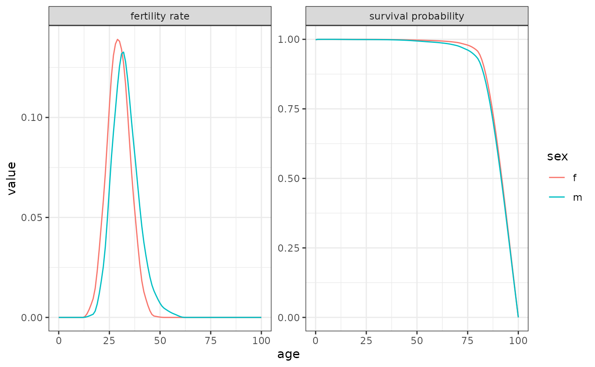
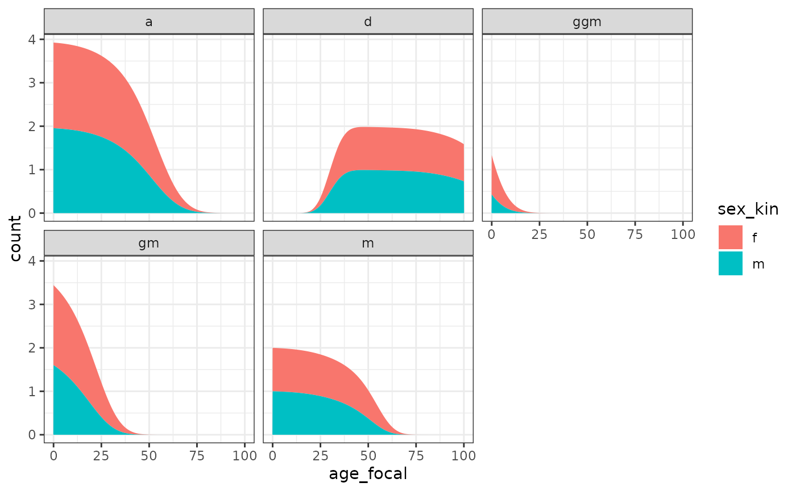
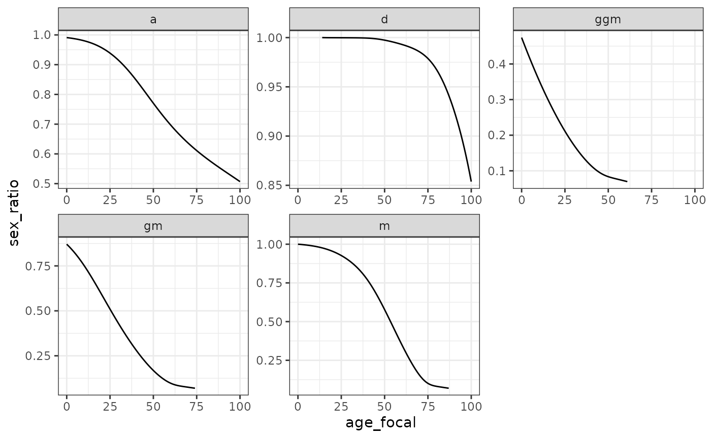
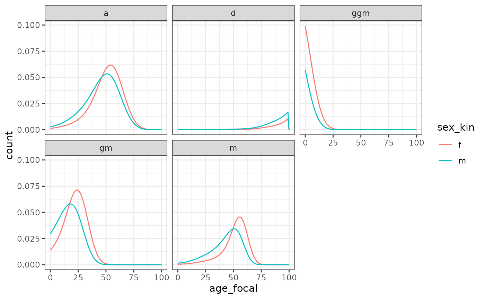
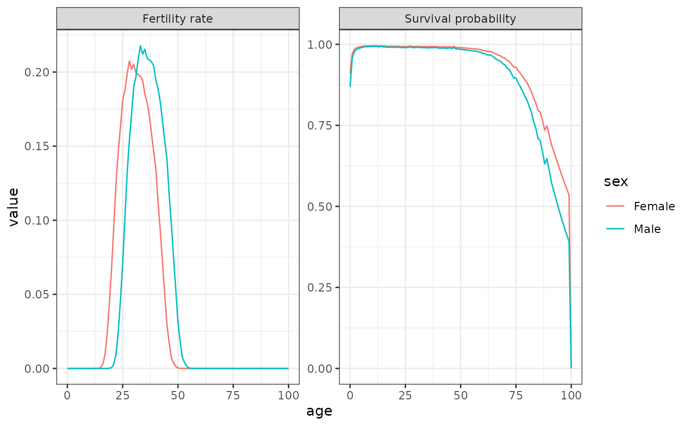
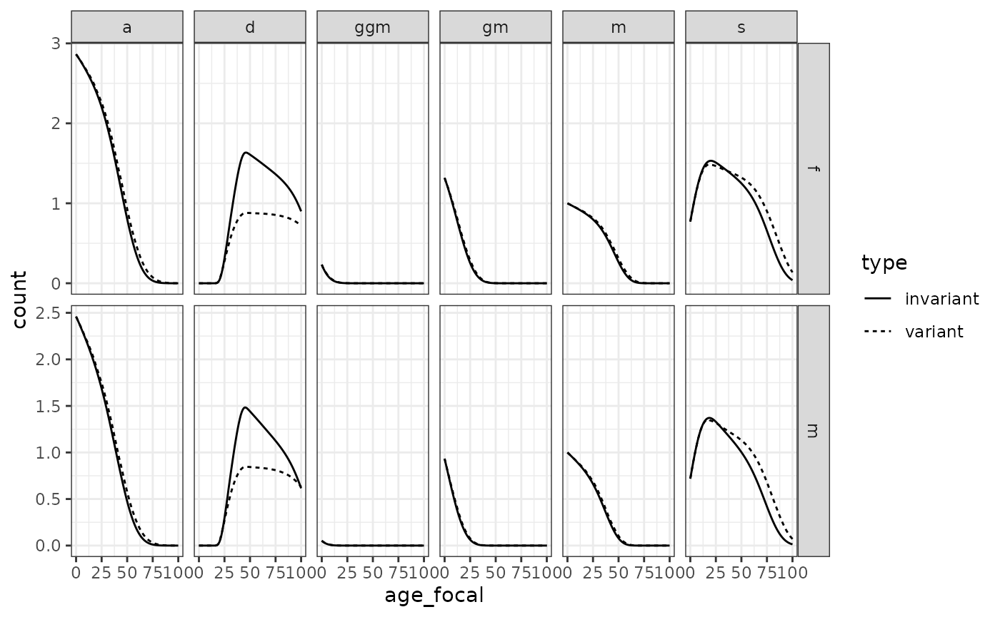
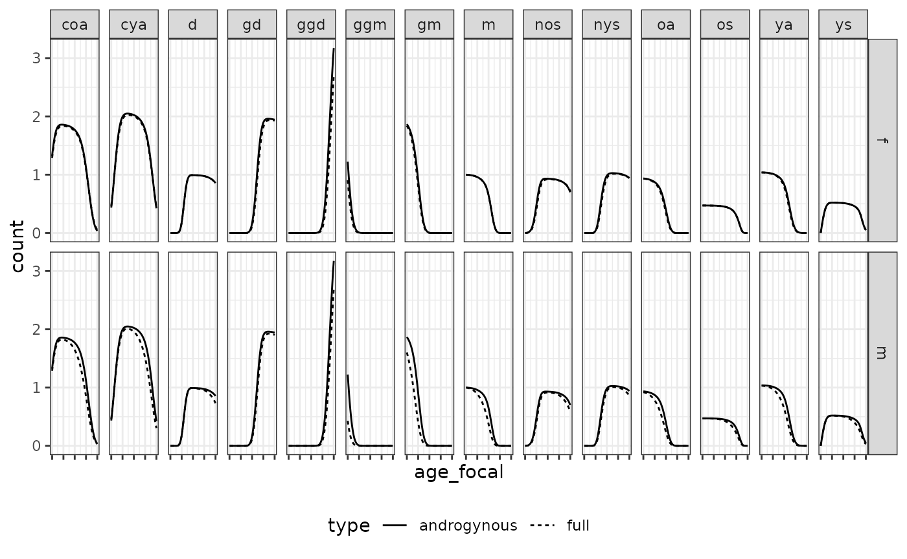
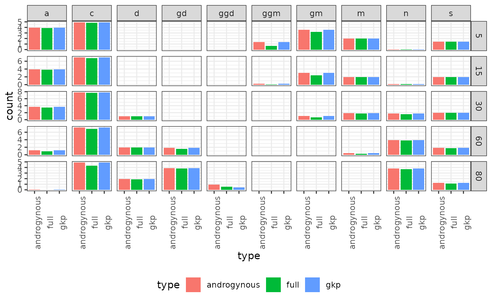
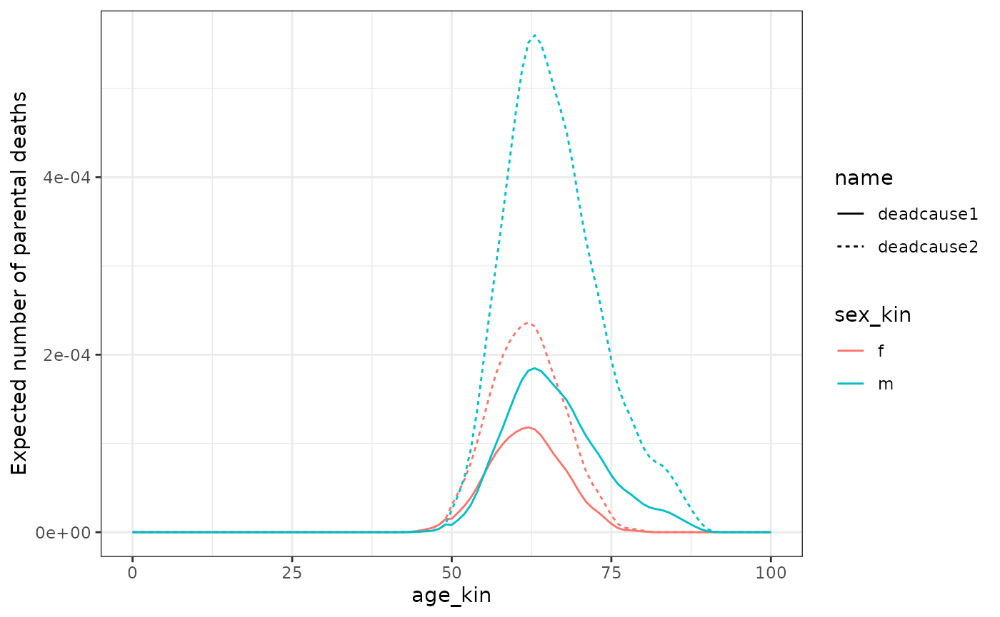

Human males generally live shorter and reproduce later than females.
These sex-specific processes affect kinship dynamics in a number of
ways. For example, the degree to which an average member of the
population, call her Focal, has a living grandparent is affected by
differential mortality affecting the parental generation at older ages.
We may also be interested in considering how kinship structures vary by
Focal’s sex: a male Focal may have a different number of grandchildren
than a female Focal given differences in fertility by sex. Documenting
these differences matters since women often face greater expectations to
provide support and informal care to relatives. As they live longer,
they may find themselves at greater risk of being having no living kin.
The function kin2sex implements two-sex kinship models as
introduced by Caswell (2022). This
vignette show how to run two-sex models and highlights some of the
advantages of this model over one-sex models in populations with
time-invariant and time-variant rates.
# library(DemoKin)
library(tidyr)
library(dplyr)
library(ggplot2)
library(knitr)
pkgload::load_all()
# devtools::load_all()1. Demographic rates by sex
Data on female fertility by age is less common than female fertility.
Schoumaker (2019) shows that male TFR is almost always higher than
female Total Fertility Rates (TFR) using a sample of 160 countries. For
this example, we use data from 2012 France to exemplify the use of the
two-sex function. Data on female and male fertility and mortality are
included in DemoKin. In this population, male and female
TFR is almost identical (1.98 and 1.99) but the distributions of
fertility by sex varies over age:
data(fra_asfr_sex, package = "DemoKin")
data(fra_surv_sex, package = "DemoKin")
fra_fert_f <- fra_asfr_sex[,"ff"]
fra_fert_m <- fra_asfr_sex[,"fm"]
fra_surv_f <- fra_surv_sex[,"pf"]
fra_surv_m <- fra_surv_sex[,"pm"]
sum(fra_fert_m)-sum(fra_fert_f)
#> [1] -0.0115
data.frame(value = c(fra_fert_f, fra_fert_m, fra_surv_f, fra_surv_m),
age = rep(0:100, 4),
sex = rep(c(rep("f", 101), rep("m", 101)), 2),
risk = c(rep("fertility rate", 101 * 2), rep("survival probability", 101 * 2))) %>%
ggplot(aes(age, value, col=sex)) +
geom_line() +
facet_wrap(~ risk, scales = "free_y") +
theme_bw()
2. Time-invariant two-sex kinship models
We now introduce the functions kin2sex, which is similar
to the one-sex function kin (see ?kin) with
two exceptions. First, the user needs to specify mortality and fertility
by sex. Second, the user must indicate the sex of Focal (which was
assumed to be female in the one-sex model). Let us first consider the
application for time-invariant populations:
kin_result <- kin2sex(
pf = fra_surv_f,
pm = fra_surv_m,
ff = fra_fert_f,
fm = fra_fert_m,
time_invariant = TRUE,
sex_focal = "f",
birth_female = .5
)The output of kin2sex is equivalent to that of
kin, except that it includes a column sex_kin
to specify the sex of the given relatives.
Let’s group aunts and siblings to visualize the number of living kin by Focal’s age.
kin_out <- kin_result$kin_summary %>%
mutate(kin = case_when(kin %in% c("s", "s") ~ "s",
kin %in% c("ya", "oa") ~ "a",
T ~ kin)) %>%
filter(kin %in% c("d", "m", "gm", "ggm", "s", "a"))
kin_out %>%
group_by(kin, age_focal, sex_kin) %>%
summarise(count=sum(count_living)) %>%
ggplot(aes(age_focal, count, fill=sex_kin))+
geom_area()+
theme_bw() +
facet_wrap(~kin)
A note on terminology
The function kin2sex uses the same codes as
kin to identify relatives (see
demokin_codes()). Note that when running a two-sex model,
the code ‘m’ refers to either mothers or fathers! Use the column
sex_kin to determine the sex of a given relatives. For
example, in order to consider only sons and ignore daughters, use:
kin_result$kin_summary %>%
filter(kin == "d", sex_kin == "m") %>%
head()
#> # A tibble: 6 × 11
#> age_focal kin sex_kin year cohort count_living mean_age sd_age count_dead
#> <int> <chr> <chr> <lgl> <lgl> <dbl> <dbl> <dbl> <dbl>
#> 1 0 d m NA NA 0 NaN NaN 0
#> 2 1 d m NA NA 0 NaN NaN 0
#> 3 2 d m NA NA 0 NaN NaN 0
#> 4 3 d m NA NA 0 NaN NaN 0
#> 5 4 d m NA NA 0 NaN NaN 0
#> 6 5 d m NA NA 0 NaN NaN 0
#> # ℹ 2 more variables: count_cum_dead <dbl>, mean_age_lost <dbl>Information on kin availability by sex allows us to consider sex ratios, a traditional measure in demography, with females often in denominator. The following figure, for example, shows that a 25yo French woman in our hypothetical population can expect to have 0.5 grandfathers for every grandmother:
kin_out %>%
group_by(kin, age_focal) %>%
summarise(sex_ratio=sum(count_living[sex_kin=="m"], na.rm=T)/sum(count_living[sex_kin=="f"], na.rm=T)) %>%
ggplot(aes(age_focal, sex_ratio))+
geom_line()+
theme_bw() +
facet_wrap(~kin, scales = "free")
The experience of kin loss for Focal depends on differences in mortality between sexes. A female Focal starts losing fathers earlier than mothers. We see a slightly different pattern for grandparents since Focal’s experience of grandparental loss is dependent on the initial availability of grandparents (i.e. if Focal’s grandparent died before her birth, she will never experience his death).
# sex ratio
kin_out %>%
group_by(kin, sex_kin, age_focal) %>%
summarise(count=sum(count_dead)) %>%
ggplot(aes(age_focal, count, col=sex_kin))+
geom_line()+
theme_bw() +
facet_wrap(~kin)
3. Time-variant two-sex kinship models
We look at populations where demographic rates are not static but
change on a yearly basis. For this, we consider the case of Sweden using
data pre-loaded in DemoKin. For this example, we will
create ‘pretend’ male fertility rates by slightly perturbing the
existing female rates. This is a toy example, since a real two-sex model
should use actual female and male rates as inputs.
years <- ncol(swe_px)
ages <- nrow(swe_px)
swe_surv_f_matrix <- swe_px
swe_surv_m_matrix <- swe_px ^ 1.5 # artificial perturbation for this example
swe_fert_f_matrix <- swe_asfr
swe_fert_m_matrix <- rbind(matrix(0, 5, years),
swe_asfr[-((ages-4):ages),]) * 1.05 # artificial perturbation for this exampleThis is how it looks for year 1900:
bind_rows(
data.frame(age = 0:100, sex = "Female", component = "Fertility rate", value = swe_fert_f_matrix[,"1900"]),
data.frame(age = 0:100, sex = "Male", component = "Fertility rate", value = swe_fert_m_matrix[,"1900"]),
data.frame(age = 0:100, sex = "Female", component = "Survival probability", value = swe_surv_f_matrix[,"1900"]),
data.frame(age = 0:100, sex = "Male", component = "Survival probability", value = swe_surv_m_matrix[,"1900"])) %>%
ggplot(aes(age, value, col = sex)) +
geom_line() +
theme_bw() +
facet_wrap(~component, scales = "free")
We now run the time-variant two-sex models (note the
time_invariant = FALSE argument):
kin_out_time_variant <- kin2sex(
pf = swe_surv_f_matrix,
pm = swe_surv_m_matrix,
ff = swe_fert_f_matrix,
fm = swe_fert_m_matrix,
sex_focal = "f",
time_invariant = FALSE,
birth_female = .5,
output_cohort = 1900
)
#> Preparing output...
#> Assuming stable population before 1900.We can plot data on kin availability alongside values coming from a time-invariant model to show how demographic change matters: the time-variant models take into account changes derived from the demographic transition, whereas the time-invariant models assume never-changing rates.
kin_out_time_invariant <- kin2sex(
swe_surv_f_matrix[,"1900"], swe_surv_m_matrix[,"1900"],
swe_fert_f_matrix[,"1900"], swe_fert_m_matrix[,"1900"],
sex_focal = "f", birth_female = .5)
kin_out_time_variant$kin_summary %>%
filter(cohort == 1900) %>% mutate(type = "variant") %>%
bind_rows(kin_out_time_invariant$kin_summary %>% mutate(type = "invariant")) %>%
mutate(kin = case_when(kin %in% c("ys", "os") ~ "s",
kin %in% c("ya", "oa") ~ "a",
T ~ kin)) %>%
filter(kin %in% c("d", "m", "gm", "ggm", "s", "a")) %>%
group_by(type, kin, age_focal, sex_kin) %>%
summarise(count=sum(count_living)) %>%
ggplot(aes(age_focal, count, linetype=type))+
geom_line()+ theme_bw() +
facet_grid(cols = vars(kin), rows=vars(sex_kin), scales = "free")
4. Approximations
Caswell (2022) introduced two approaches for approximating two-sex kinship structures for cases when male demographic rates are not available. The first is the androgynous approximation, which assumes equal fertility and survival for males and females. The second is the use of GKP factors apply to each type of relative (e.g., multiplying mothers by two to obtain the number of mothers and fathers).
Here, we present a visual evaluation of the accuracy of these
approximations by comparing to ‘true’ two-sex models using the French
data included with DemoKin for time-invariant models (Caswell 2022). We start by considering the
androgynous approximation. We compare expected kin counts by age and
find high levels of consistency for all kin types, except for
grandfathers and great-grandfathers:
kin_out <- kin2sex(fra_surv_f, fra_surv_m, fra_fert_f, fra_fert_m, sex_focal = "f", birth_female = .5)
kin_out_androgynous <- kin2sex(fra_surv_f, fra_surv_f, fra_fert_f, fra_fert_f, sex_focal = "f", birth_female = .5)
bind_rows(
kin_out$kin_summary %>% mutate(type = "full"),
kin_out_androgynous$kin_summary %>% mutate(type = "androgynous")) %>%
group_by(kin, age_focal, sex_kin, type) %>%
summarise(count = sum(count_living)) %>%
ggplot(aes(age_focal, count, linetype = type)) +
geom_line() +
theme_bw() +
theme(legend.position = "bottom", axis.text.x = element_blank()) +
facet_grid(row = vars(sex_kin), col = vars(kin), scales = "free")
Next, we consider the use of GKP factors and find that it also approximates relatively accurately kin counts at different ages of Focal. These are presented as examples only. Users are invited to perform more rigorous comparisons of these approximations.
# with gkp
kin_out_1sex <- kin(fra_surv_f, fra_fert_f, birth_female = .5)
kin_out_GKP <- kin_out_1sex$kin_summary%>%
mutate(count_living = case_when(kin == "m" ~ count_living * 2,
kin == "gm" ~ count_living * 4,
kin == "ggm" ~ count_living * 8,
kin == "d" ~ count_living * 2,
kin == "gd" ~ count_living * 4,
kin == "ggd" ~ count_living * 4,
kin == "oa" ~ count_living * 4,
kin == "ya" ~ count_living * 4,
kin == "os" ~ count_living * 2,
kin == "ys" ~ count_living * 2,
kin == "coa" ~ count_living * 8,
kin == "cya" ~ count_living * 8,
kin == "nos" ~ count_living * 4,
kin == "nys" ~ count_living * 4))
bind_rows(
kin_out$kin_summary %>% mutate(type = "full"),
kin_out_androgynous$kin_summary %>% mutate(type = "androgynous"),
kin_out_GKP %>% mutate(type = "gkp")) %>%
mutate(kin = case_when(kin %in% c("ys", "os") ~ "s",
kin %in% c("ya", "oa") ~ "a",
kin %in% c("coa", "cya") ~ "c",
kin %in% c("nys", "nos") ~ "n",
T ~ kin)) %>%
filter(age_focal %in% c(5, 15, 30, 60, 80)) %>%
group_by(kin, age_focal, type) %>%
summarise(count = sum(count_living)) %>%
ggplot(aes(type, count)) +
geom_bar(aes(fill=type), stat = "identity") +
theme_bw()+theme(axis.text.x = element_text(angle = 90), legend.position = "bottom")+
facet_grid(col = vars(kin), row = vars(age_focal), scales = "free")
2. Causes of death
Now assume we have two causes of death (COD). For females, the risk of the first COD is half the risk of the second COD for ages greater than 50. For males, the risk of the first COD is 2/3 of the second COD for ages greater than 50. We operationalize this using two matrices with dimension 2 by 101 (number of causes by number of ages).
Hf <- matrix(c( .5, 1), nrow = 2, ncol = length(fra_surv_f))
Hm <- matrix(c(.33, 1), nrow = 2, ncol = length(fra_surv_f))
Hf[,1:50] <- Hm[,1:50] <- 1This is a generalization of the approach outlined by Caswell (2023). In the original formulation, the inputs
in matrix
are the hazard rates. Here, we treat them like a relative risk factor
related to the underlying probability of dying. For more details, see
section 2.3 and formula 30 in section A.1 of Caswell (2023). Now we run the time-invariant two-sex
model by COD for France 2012, assuming a death count distribution based
on the two competing causes; note that the kin2sex function
now takes the arguments Hf and Hm but the
other arguments remain unchanged:
kin_out_cod_invariant <- kin2sex(
pf = fra_surv_f,
pm = fra_surv_m,
ff = fra_fert_f,
fm = fra_fert_m,
Hf = Hf,
Hm = Hm,
time_invariant = TRUE)The output of kin2sex is the the kin_full
data frame that we have encountered before. The only differences is that
kin_full now includes one column for each COD specified in
the input. Therefore, the number of columns will vary depending on how
many COD you are considering!
head(kin_out_cod_invariant)
#> # A tibble: 6 × 9
#> year cohort age_focal sex_kin kin age_kin living deadcause1 deadcause2
#> <lgl> <lgl> <int> <chr> <chr> <int> <dbl> <dbl> <dbl>
#> 1 NA NA 0 f d 0 0 0 0
#> 2 NA NA 1 f d 0 0 0 0
#> 3 NA NA 2 f d 0 0 0 0
#> 4 NA NA 3 f d 0 0 0 0
#> 5 NA NA 4 f d 0 0 0 0
#> 6 NA NA 5 f d 0 0 0 0We can now plot the death distribution by age and COD of Focal’s parents when Focal is 30 yo.
kin_out_cod_invariant %>%
filter(kin == "m", age_focal == 30) %>%
summarise(deadcause1 = sum(deadcause1),
deadcause2 = sum(deadcause2), .by = c(age_kin, sex_kin)) %>%
pivot_longer(deadcause1:deadcause2) %>%
ggplot(aes(age_kin, value, col = sex_kin, linetype = name)) +
geom_line() +
labs(y = "Expected number of parental deaths") +
theme_bw()
In this simplified example, the parents of Focal only died after age 50. This helped highlight the relative difference between the COD for each sex. Note that the sum of the death counts by sex gives the same result as the total deaths by sex at that age in the less complex model (i.e., the one that does not consider COD, see section 2 of this guide).
You can add as many COD as you want, but keep in mind that this can be computationally intensive. For time-variant kinship models that consider COD, you must provide a list of matrices by sex ( and ). The elements of this list should be matrices for each year (following the same order than the mortality and fertility components).